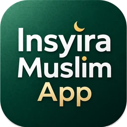
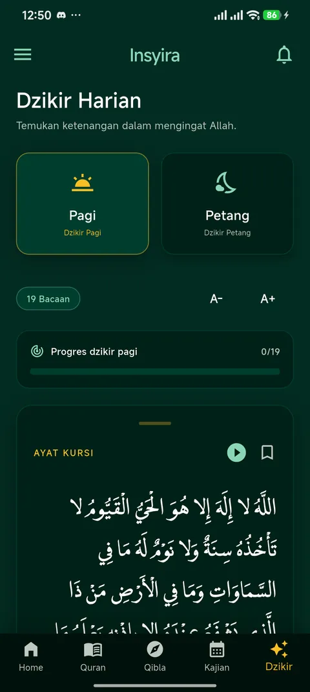
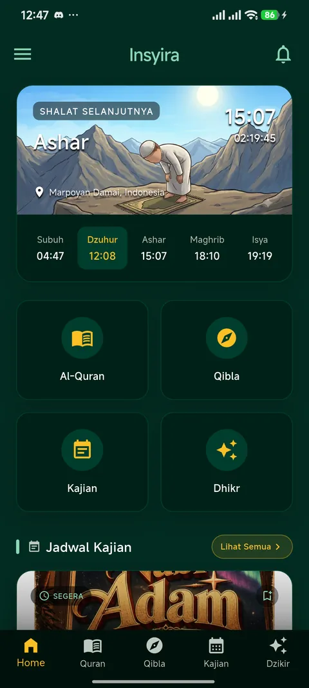

Sahabat ibadah harianmu.
Insyira menemani hari seorang Muslim — dari bangun sebelum Subuh sampai menutup malam. Jadwal sholat dan adzan, Al-Quran, arah kiblat, dzikir, sampai kajian — dalam satu aplikasi yang tenang.
إِنَّ مَعَ الْعُسْرِ يُسْرًا“Sesungguhnya bersama kesulitan ada kemudahan.”
QS. Al-Insyirah 94:6
- Tanpa langganan
- Tanpa iklan
- Bisa dipakai tanpa akun

